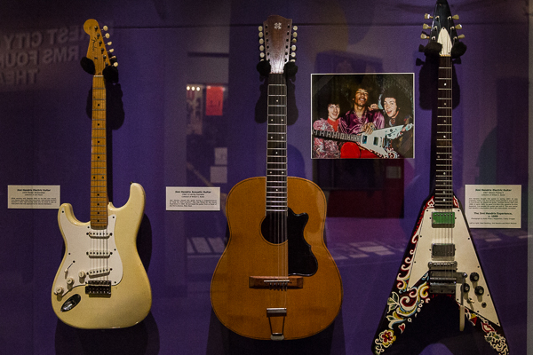

As a kid, I’d always run errands with Mom. She would play the local classic rock station in the car and point out her favorite songs or bands as they came on the radio. Lots of them would be accompanied with a fond memory of a vinyl she’d bought or concert she’d seen. Over the years I grew an appreciation for the rock icons of the 70’s and 80’s.
Aerosmith, Guns n’ Roses, KISS, AC/DC, Steve Miller Band. You name ’em, I probably played air guitar to ’em.
Not particularly jazzed on the idea of spending the better part of a day in what could be considered a museum, I was skeptical as we walked into the Rock and Roll Hall of Fame. But as soon as I saw a couple guitars from some of my favorite blues guitarists, I realized that this wasn’t going to be an ordinary museum.
Original photo lost in the archive
Expected file: 161017_Ohio_Cleveland-015.jpg
Instead of a museum of prehistoric animals that I’d never heard of, I was surrounded by instruments, hand-written lyrics, and music video props that I’d seen used by the rock gods I grew up idolizing. Steven Tyler’s scarves, Michael Jackson’s glove, John Lennon’s glasses.
Original photo lost in the archive
Expected file: 161017_Ohio_Cleveland-002.jpg
We started on the ground floor of the Rock Hall as it started with the beginnings of rock n’ roll music. We were introduced to the pioneers of the genre: soul, gospel and blues artists. I heard all the time about how these people shaped rock music, especially blues guitarists, but to be able to see firsthand the instruments they used to do it was an eye opening experience.
Original photo lost in the archive
Expected file: 161017_Ohio_Cleveland-004.jpg
Original photo lost in the archive
Expected file: 161017_Ohio_Cleveland-010.jpg
I’d expected to walk around and look at a bunch of guitars. While we got to do plenty of that, the Rock Hall offers a wide variety of other artifacts too. Outfits from music videos and world tours, props, lyrics, drum sets, and even some personal items. This made me feel like I was part of the legends’ lives. They weren’t some icon to be seen on TV or from the nosebleed seats; they were real people. They just happened to wear goofy schoolboy costumes on stage or a diamond encrusted glove…

One of my favorite random artifacts was the Hendrix family couch. That’s right, the couch that Jimi Hendrix used to sit on and make weird sounds with his guitar as a kid. It made the late legend seem more relatable than the rock star you see in all the videos, shredding a solo with his teeth and lighting his ax on fire. He spent a lot of time on a couch, just like you and me. Although the couch was cool, it wasn’t as fun to look at as Jimi’s guitar collection. Including that Flying V with the hand-drawn psychedelic doodles around the pick guard.
Original photo lost in the archive
Expected file: 161017_Ohio_Cleveland-024.jpg
The Rock Hall also dedicates its two uppermost floors to themed displays that changes throughout the year. It only makes sense that it’s currently dressed in politically charged propaganda used by some of the most influential rockers over the decades. There was a wide array of outspoken musical tools, from the anti-Bush “American Idiot” lyrics penned by Green Day’s Billie Joe Armstrong to the pro-peace acoustic guitar wielded by John Lennon.
In short, the Rock Hall has it all. Cleveland rocks.